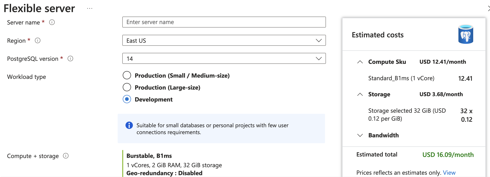
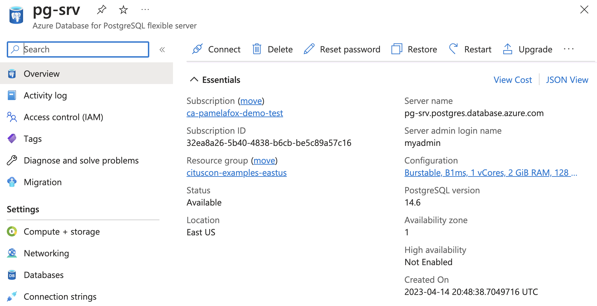
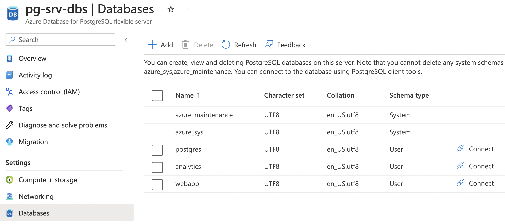
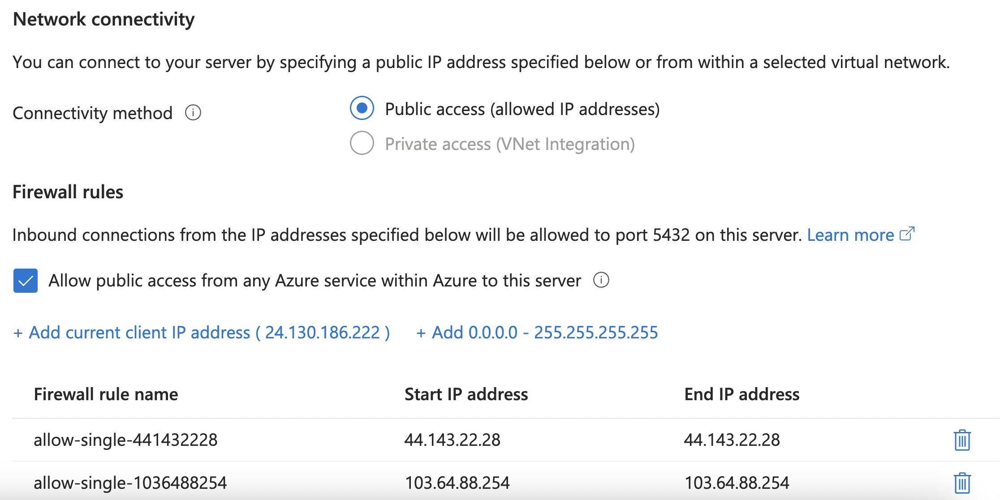
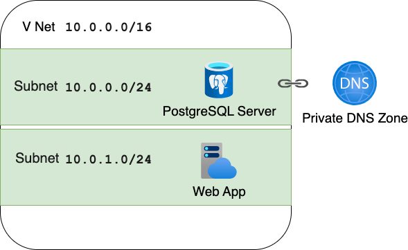
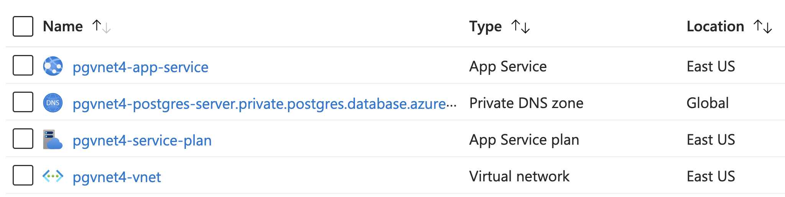

Deploying PostgreSQL to Azure with Bicep

About me

Python Cloud Advocate at Microsoft
Formerly: UC Berkeley, Coursera, Khan Academy, Google
Find me online at:
| Mastodon | @pamelafox@fosstodon.org |
| @pamelafox | |
| GitHub | www.github.com/pamelafox |
| Website | pamelafox.org |
Managed services for PostgreSQL on Azure
| Option | Description |
|---|---|
| Azure Database for PostgreSQL – Single Server | Microsoft's original offering. No longer recommended for new apps. |
| Azure Database for PostgreSQL – Flexible Server | Microsoft's most recent PostgreSQL offering. Fully managed service with vertical scaling. |
| Azure Cosmos DB for PostgreSQL | Distributed database using PostgreSQL and the Citus extension. Can scale horizontally. |
🔗 aka.ms/flex-vs-single
Comparison: Flexible vs. Single Server
🔗 aka.ms/flex-vs-cosmos
Cosmos DB for PostgreSQL vs. Flex Server
Ways to deploy
a PostgreSQL Flexible Server

Using the Azure Portal
😃 Easy to get started 😭 but difficult to replicate.
Using CLI commands
| Method | Example |
|---|---|
| Azure CLI |
|
| Azure PowerShell |
|
😃 Replication is now possible!
😭 Updating resource parameters requires different commands than creation.
Using ARM templates
ARM (Azure Resource Manager) templates are JSON files that describe the resources you want to create.
{
"type": "Microsoft.DBforPostgreSQL/flexibleServers",
"apiVersion": "2021-06-01",
"name": "pg-srv",
"location": "westus",
"sku": {
"name": "Standard_B1ms",
"tier": "Burstable"
},
"properties": {
"administratorLogin": "admin-user",
"administratorLoginPassword": "NeverShowThis",
"version": "14"
}
...
👁️ See full example in postgres_database.bicep
😃 Repeatable provisioning of all resource types
😭 JSON files can be unwieldy and hard to parameterize
Bicep

Using Bicep
Bicep is a DSL (domain-specific language) that compiles to ARM templates.
resource server 'Microsoft.DBforPostgreSQL/flexibleServers@2021-06-01' = {
name: 'pg-srv'
location: 'eastus'
sku: {
name: 'Standard_B1ms'
tier: 'Burstable'
}
properties: {
administratorLogin: 'myadmin'
administratorLoginPassword: 'NeverShowThis'
version: '14'
storage: {
storageSizeGB: 128
}
}
}
The Bicep language
| Feature | Example |
|---|---|
| Parameters | |
| Types | |
| Logic | |
| Loops | |
| Functions | |
| Modules | |
A parameterized Bicep file
Use parameters for values that vary across deployments.
param serverName string = 'pg-srv'
param location string = 'eastus'
@secure()
param adminPassword string
resource srv 'Microsoft.DBforPostgreSQL/flexibleServers@2021-06-01' = {
name: serverName
location: location
sku: {
name: 'Standard_B1ms'
tier: 'Burstable'
}
properties: {
administratorLogin: 'myadmin'
administratorLoginPassword: adminPassword
version: '14'
storage: { storageSizeGB: 128 }
}
}
Deploying from Bicep
Use az deployment group create to create or update resources in an existing resource group:
$ az deployment group create --resource-group pg-grp --template-file pg.bicep
Please provide securestring value for 'adminPassword' (? for help):
{
"name": "postgres_example1",
"properties": {
"outputResources": [{
"id": "/subscriptions/32ea8a26-5b40-4838-b6cb-be5c89a57c16/resourceGroups/cituscon-examples-eastus/providers/Microsoft.DBforPostgreSQL/flexibleServers/pg-srv",
"resourceGroup": "pg-grp"
}],
...
}
Optionally, specify parameters on the command line:
$ az deployment group create --resource-group pg-grp --template-file pg.bicep \
--parameters adminPassword=ADMIN_PASSWORD
Deploying from Bicep (Result)
The server will be available in the Azure Portal:
Child resources
A child resource exists solely within the scope of its parent resource.
Child resources that can be created for PostgreSQL:
administratorsconfigurationsdatabasesfirewallRulesmigrations
+ Read-only child resources: advisors, backups, queryTexts.
Child resources: database
The server will always include a database called postgres
plus system databases azure_maintenance, azure_sys.
Create an additional database:
resource postgresServer 'Microsoft.DBforPostgreSQL/flexibleServers@2022-12-01' = {
name: serverName
location: location
...
resource database 'databases' = {
name: 'webapp'
}
}
👁️ See full example in postgres_database.bicep
Child resources: databases
Create multiple databases with an array and for loop:
param databaseNames array = ['webapp', 'analytics']
resource postgresServer 'Microsoft.DBforPostgreSQL/flexibleServers@2022-12-01' = {
name: serverName
location: location
...
resource database 'databases' = [for name in databaseNames: {
name: name
}]
}
👁️ See full example in postgres_databases.bicep
Child resources: databases (Result)
The databases will be listed in the Azure Portal:
Child resources: firewall rule
By default, the server is not accessible from any IP ranges.
You can use firewallRules to allow access from IPs.
Allow access from any Azure service within Azure:
resource firewallAzure 'firewallRules' = {
name: 'allow-all-azure-internal-IPs'
properties: {
startIpAddress: '0.0.0.0'
endIpAddress: '0.0.0.0'
}
}
⚠️ Any Azure dev can now access, if they know user/pass.
👁️ See full example in postgres_azurefirewall.bicep
Conditional child resources: firewall rule
Conditionally create a rule using if with a bool param:
param allowAllIPsFirewall bool
resource postgresServer 'Microsoft.DBforPostgreSQL/flexibleServers@2022-12-01' = {
...
resource firewallAll 'firewallRules' = if (allowAllIPsFirewall) {
name: 'allow-all-IPs'
properties: {
startIpAddress: '0.0.0.0'
endIpAddress: '255.255.255.255'
}
}
}
⚠️⚠️ Anyone at all can access, if they know user/pass.
👁️ See full example in postgres_condfirewall.bicep
Child resources: firewall rules
Create rules for each IP in list using array with for:
param allowedSingleIPs array = ['103.64.88.254', '44.143.22.28']
resource postgresServer 'Microsoft.DBforPostgreSQL/flexibleServers@2022-12-01' = {
...
resource firewallSingle 'firewallRules' = [for ip in allowedSingleIPs: {
name: 'allow-single-${replace(ip, '.', '')}'
properties: {
startIpAddress: ip
endIpAddress: ip
}
}]
}
👁️ See full example in postgres_loopfirewall.bicep
Child resources: firewall rules (Result)
The firewall rules will be listed in the Azure Portal:
Using a Virtual Network
Securing in a VNet
As a security best practice, Azure recommends that deploying PostgreSQL servers in a Virtual Network (VNet), along with other Azure resources that need access to it.
That requires multiple resources:
- Virtual Network
- Private DNS Zone
- Whatever resource needs access to the server
Virtual Network
Create a VNet with a private address space of 10.0.0.0 - 10.0.255.255:
resource virtualNetwork 'Microsoft.Network/virtualNetworks@2019-11-01' = {
name: '${name}-vnet'
location: location
properties: {
addressSpace: {
addressPrefixes: [
'10.0.0.0/16'
]
}
}
}
Virtual Network: subnets
Create subnet with address space of 10.0.0.1 - 10.0.0.255
and delegate to PostgreSQL servers:
resource databaseSubnet 'subnets' = {
name: 'database-subnet'
properties: {
addressPrefix: '10.0.0.0/24'
delegations: [
{
name: '${name}-subnet-delegation'
properties: {
serviceName: 'Microsoft.DBforPostgreSQL/flexibleServers'
}
}]
}
}
🔗 aka.ms/vnet-cidr Configuring Azure VNet subnets with CIDR notation
Virtual Network: subnets
Create subnet with address space of 10.0.1.1 - 10.0.1.255
and delegate to other resource (App Service):
resource webappSubnet 'subnets' = {
name: 'webapp-subnet'
properties: {
addressPrefix: '10.0.1.0/24'
delegations: [
{
name: '${name}-subnet-delegation-web'
properties: {
serviceName: 'Microsoft.Web/serverFarms'
}
}]
}
}
🔗 aka.ms/vnet-cidr Configuring Azure VNet subnets with CIDR notation
Private DNS Zone
To let other service access the PostgreSQL server, create a private DNS Zone:
resource privateDnsZone 'Microsoft.Network/privateDnsZones@2020-06-01' = {
name: '${pgServerPrefix}.private.postgres.database.azure.com'
location: 'global'
resource vNetLink 'virtualNetworkLinks' = {
name: '${pgServerPrefix}-link'
location: 'global'
properties: {
registrationEnabled: false
virtualNetwork: { id: virtualNetwork.id }
}
}
}
🔗 aka.ms/private-dns
What is Azure Private DNS?
🔗 aka.ms/pg-vnet-dns
PostgreSQL networking: Private DNS Zone and VNets
Configure the PostgreSQL server
Add the network property on the PostgreSQL server to inject it into the VNet and
connect it to the DNS Zone:
resource postgresServer 'Microsoft.DBforPostgreSQL/flexibleServers@2022-01-20-preview' = {
name: pgServerPrefix
...
properties: {
...
network: {
delegatedSubnetResourceId: virtualNetwork::databaseSubnet.id
privateDnsZoneArmResourceId: privateDnsZone.id
}
}
}
Configure the Web App
Add a networkConfig child resource on the Web App Service to inject it into the VNet:
resource web 'Microsoft.Web/sites@2022-03-01' = {
name: '${name}-app-service'
...
resource webappVnetConfig 'networkConfig' = {
name: 'virtualNetwork'
properties: {
subnetResourceId: virtualNetwork::webappSubnet.id
}
}
}
All together: PostgreSQL in VNet
param name string = 'pgvnet4'
param location string = 'eastus'
@secure()
param adminPassword string
var pgServerPrefix = '${name}-postgres-server'
resource virtualNetwork 'Microsoft.Network/virtualNetworks@2019-11-01' = {
name: '${name}-vnet'
location: location
properties: {
addressSpace: {
addressPrefixes: [
'10.0.0.0/16'
]
}
}
resource databaseSubnet 'subnets' = {
name: 'database-subnet'
properties: {
addressPrefix: '10.0.0.0/24'
delegations: [
{
name: '${name}-subnet-delegation'
properties: {
serviceName: 'Microsoft.DBforPostgreSQL/flexibleServers'
}
}
]
}
}
resource webappSubnet 'subnets' = {
name: 'webapp-subnet'
properties: {
addressPrefix: '10.0.1.0/24'
delegations: [
{
name: '${name}-subnet-delegation-web'
properties: {
serviceName: 'Microsoft.Web/serverFarms'
}
}
]
}
}
}
resource privateDnsZone 'Microsoft.Network/privateDnsZones@2020-06-01' = {
name: '${pgServerPrefix}.private.postgres.database.azure.com'
location: 'global'
resource vnetLink 'virtualNetworkLinks' = {
name: '${pgServerPrefix}-link'
location: 'global'
properties: {
registrationEnabled: false
virtualNetwork: {
id: virtualNetwork.id
}
}
}
}
resource web 'Microsoft.Web/sites@2022-03-01' = {
name: '${name}-app-service'
location: location
kind: 'app,linux'
properties: {
serverFarmId: appServicePlan.id
siteConfig: {
alwaysOn: true
linuxFxVersion: 'PYTHON|3.11'
ftpsState: 'Disabled'
appCommandLine: 'startup.sh'
}
httpsOnly: true
}
identity: {
type: 'SystemAssigned'
}
resource appSettings 'config' = {
name: 'appsettings'
properties: {
AZURE_POSTGRESQL_HOST: '${postgresServer.name}.postgres.database.azure.com'
AZURE_POSTGRESQL_USER: postgresServer.properties.administratorLogin
AZURE_POSTGRESQL_PASS: adminPassword
AZURE_POSTGRESQL_DBNAME: 'postgres'
}
}
resource webappVnetConfig 'networkConfig' = {
name: 'virtualNetwork'
properties: {
subnetResourceId: virtualNetwork::webappSubnet.id
}
}
}
resource appServicePlan 'Microsoft.Web/serverfarms@2021-03-01' = {
name: '${name}-service-plan'
location: location
sku: {
name: 'B1'
}
properties: {
reserved: true
}
}
resource postgresServer 'Microsoft.DBforPostgreSQL/flexibleServers@2022-01-20-preview' = {
name: pgServerPrefix
location: location
sku: {
name: 'Standard_B1ms'
tier: 'Burstable'
}
properties: {
administratorLogin: 'postgresadmin'
administratorLoginPassword: adminPassword
storage: {
storageSizeGB: 128
}
version: '14'
network: {
delegatedSubnetResourceId: virtualNetwork::databaseSubnet.id
privateDnsZoneArmResourceId: privateDnsZone.id
}
}
}👁️ See full example in postgres_vnet.bicep
All together: PostgreSQL in VNet (Result)
All resources will be listed in the Portal:
Tips & Tricks

PostgreSQL tips
- Managed identity is a more secure approach than username/password. See sample at: github.com/Azure-Samples/flask-postgresql-managed-identity
- Location, location, location:
There are some location constraints for PostgreSQL servers, especially for Microsoft employees. If you get a funky error, try again with a new location (like "centralus"). - Many things can't be changed after creation: admin username, PostgreSQL version, location, networking option, etc. Give everything a good look before you start adding production data.
Bicep linting
Use az bicep build command to check file for errors:
$ az bicep build -f pg.bicep
Use a CI/CD workflow to always check for errors:
steps:
- name: Checkout
uses: actions/checkout@v2
- name: Azure CLI script
uses: azure/CLI@v1
with:
inlineScript: az bicep build -f infra/main.bicep
👁️ See whole file: azure-bicep.yaml
Bicep security validation
Use Microsoft Security DevOps action to find security issues in Bicep files:
- name: Run Microsoft Security DevOps Analysis
uses: microsoft/security-devops-action@preview
id: msdo
with:
tools: templateanalyzer
Example output:
Error: 1. TemplateAnalyzer Error AZR-000284 - File: infra/main.bicep. Line: 54. Column 0.
Tool: TemplateAnalyzer: Rule: AZR-000284 (Azure.Deployment.AdminUsername).
https://azure.github.io/PSRule.Rules.Azure/en/rules/Azure.Deployment.AdminUsername/
Resource properties can be configured using a hardcoded value or Azure Bicep/ template
expressions. When specifing sensitive values, use secure parameters such as secureString
or secureObject.
👁️ See whole file: azure-dev-validate.yaml
More Bicep tips
- Install the Bicep extension for VS Code

- Open the Bicep reference (and keep it open)
- Search Github for examples using "lang:bicep"
- Create the resource in Portal and export the template